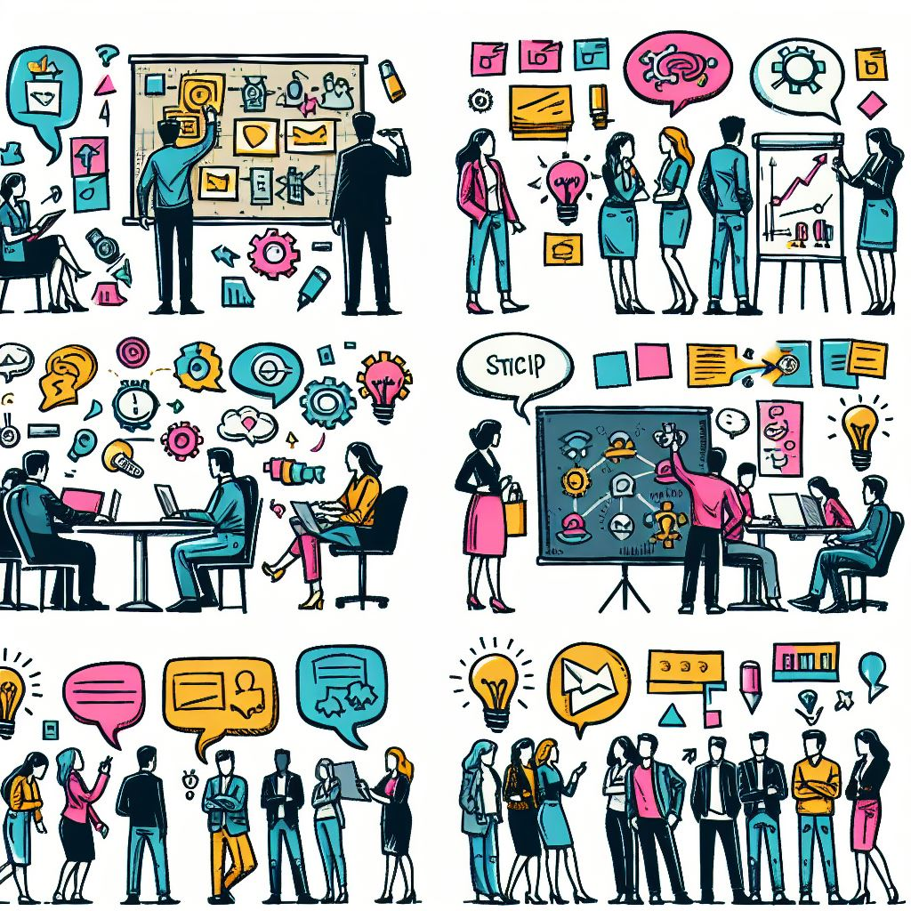
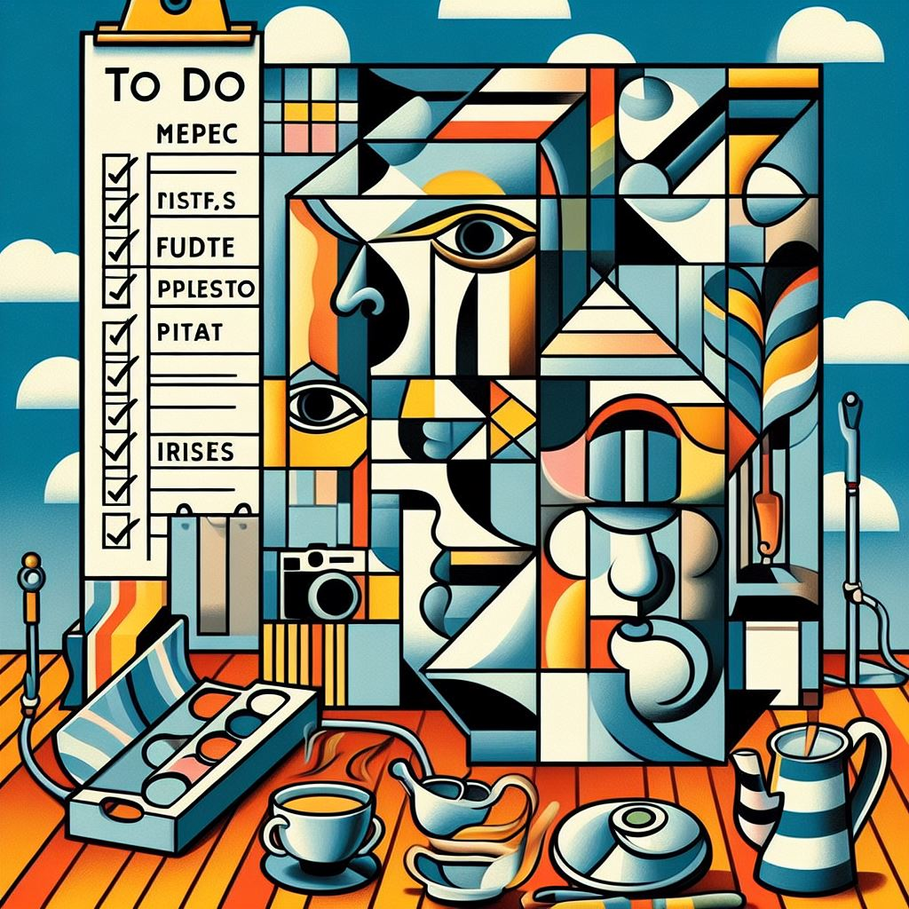
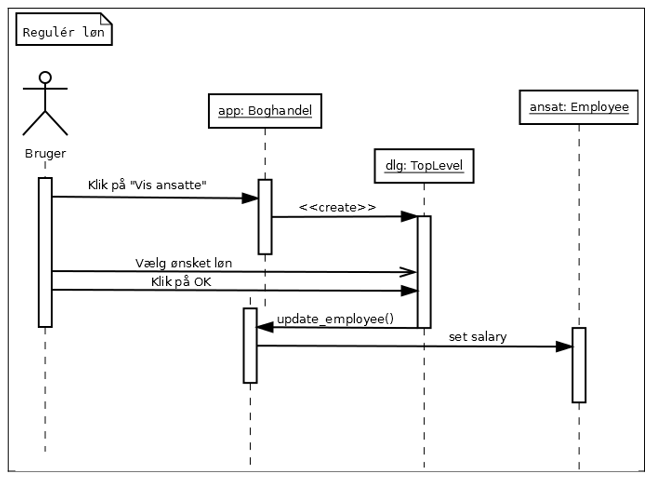
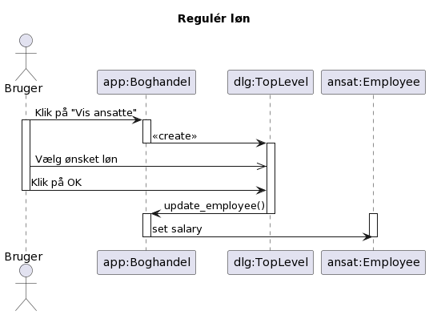
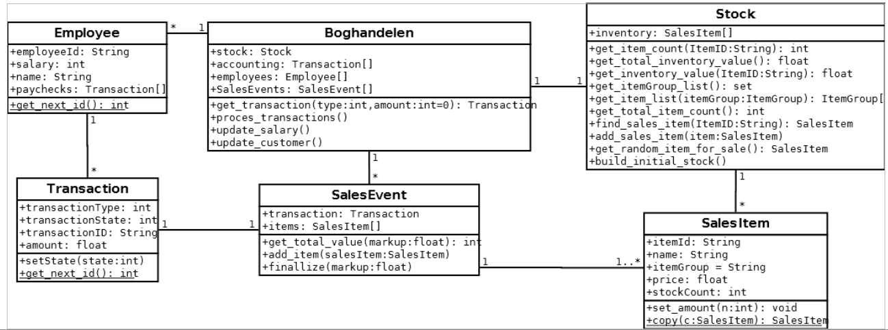
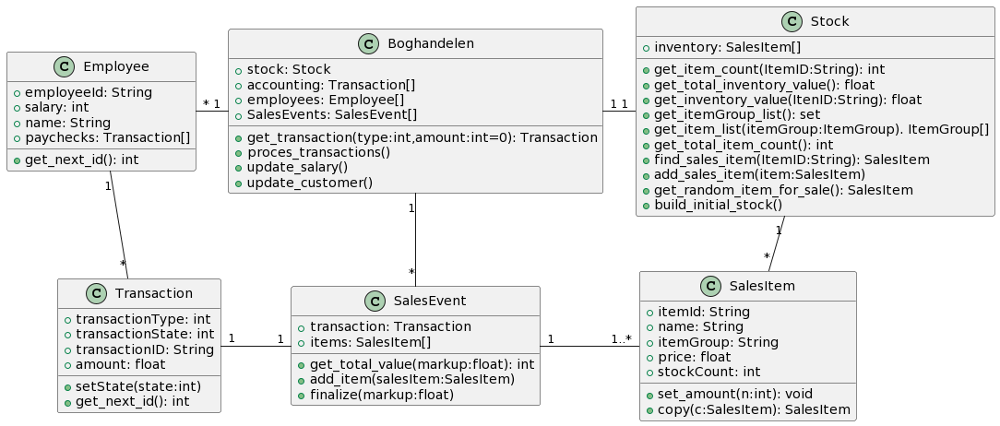
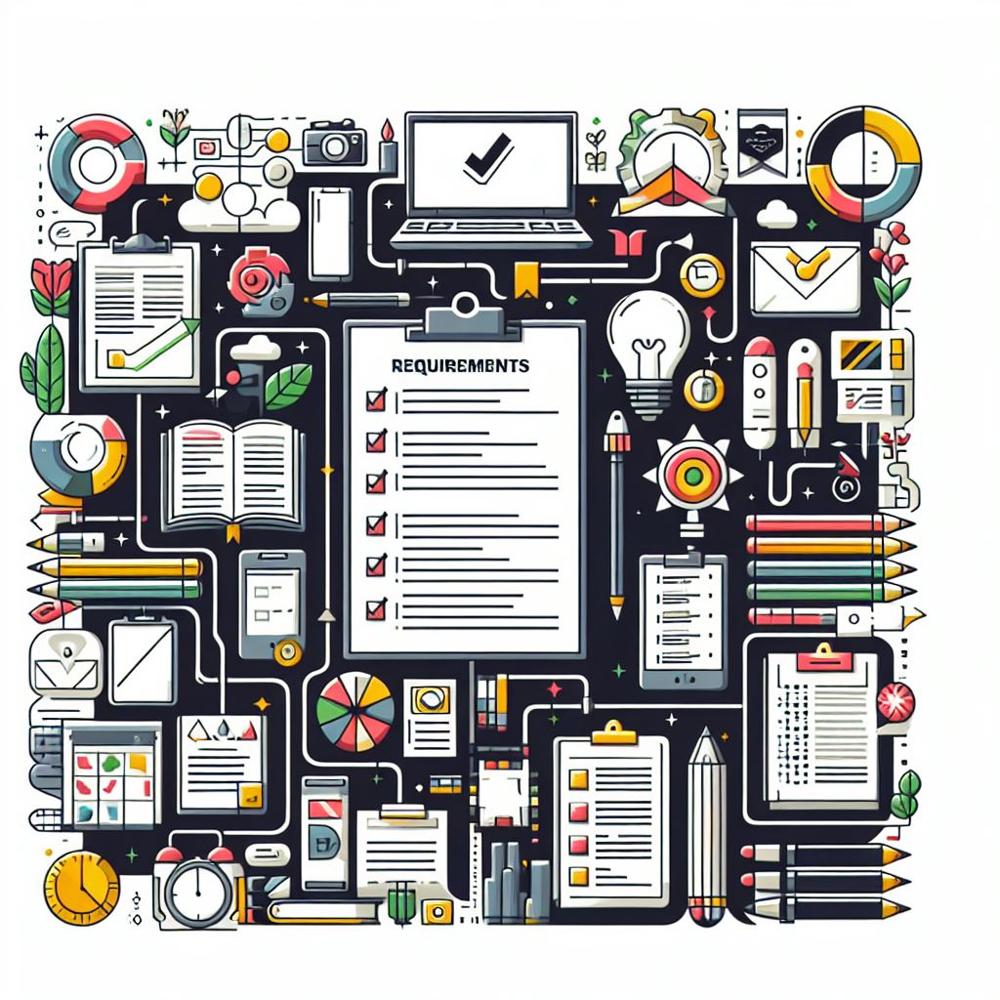

Valg af kriterier
Gruppen udvælger sammen kriterier. Prioritér kriterierne efter 1-5. 1 "ikke vigtig", 5 "meget vigtig".
Individuel vurdering
Hvert medlem gennemgår idéerne og vurderer, hvor godt idéen opfylder hver af kriterierne. Giv et tal mellem 1 og 5 for hvert kriterie per idé.
Sammentælling
| Krav 1 (prio 5) | Krav 2 (prio 2) | Krav 3 (prio 3) | Resultat | |
|---|---|---|---|---|
| Idé 1 | 3 | 3 | 2 | 27 |
| Idé 2 | 1 | 4 | 3 | 22 |
| Idé 3 | 5 | 2 | 1 | 32 |
| Idé 4 | 3 | 2 | 2 | 25 |
logbog.md eller logbog.org og gemme den i deres git-repo. (Kan oprettes og editeres direkte på github)
| Programdel | Dokumentationsform |
|---|---|
| Præsentationslag (Frontend/View) | Brugerhistorier |
| Applikationslag (Controller) | Sekvensdiagrammer |
| Datalag (database/gemte file/Model) | Klassediagram |
Brugerhistorie 1: Bestil bøger
- Brugeren vælger en bog fra listen af bøger.
- Brugeren klikker på knappen "Bestil flere".
- Programmet viser en dialog, hvor brugeren kan se:
- Bogens titel
- En Spinbox, hvor man kan vælge det antal bøger man ønsker at bestille. (0-10)
- En "OK"-knap
- Brugeren vælger det ønskede antal bøger og klikker "OK".
- Hvis antallet er større end 0, oprettes en transaktion, hvor bøgernes pris trækkes fra kassen, og bøgerne tilføjes lageret.
- Hvis antallet er 0 oprettes ingen transaktion, og der sker intet med lageret.
- Programmet lukker dialogen.

Eksemplet er lånt herfra https://www.emu.dk/stx/programmering/inspiration-til-undervisning/softwareudvikling-og-programmering

Koden er
@startuml title Regulér løn actor Bruger participant "app:Boghandel" as app participant "dlg:TopLevel" as dlg participant "ansat:Employee" as ansat activate Bruger Bruger -> app : Klik på "Vis ansatte" app -> dlg : <<create>> Bruger ->> dlg : Vælg ønsket løn Bruger -> dlg : Klik på OK deactivate Bruger app <- dlg : update_employee() app -> ansat : set salary @enduml
Find meget mere info her: https://plantuml.com/sequence-diagram


Koden er
@startuml
class Employee {
+employeeId: String
+salary: int
+name: String
+paychecks: Transaction[]
+get_next_id(): int
}
class Boghandelen {
+stock: Stock
+accounting: Transaction[]
+employees: Employee[]
+SalesEvents: SalesEvent[]
+get_transaction(type:int,amount:int=0): Transaction
+proces_transactions()
+update_salary()
+update_customer()
}
class Stock{
+inventory: SalesItem[]
+get_item_count(ItemID:String): int
+get_total_inventory_value(): float
+get_inventory_value(ItenID:String): float
+get_itemGroup_list(): set
+get_item_list(itemGroup:ItemGroup). ItemGroup[]
+get_total_item_count(): int
+find_sales_item(ItemID:String): SalesItem
+add_sales_item(item:SalesItem)
+get_random_item_for_sale(): SalesItem
+build_initial_stock()
}
class SalesItem{
+itemId: String
+name: String
+itemGroup: String
+price: float
+stockCount: int
+set_amount(n:int): void
+copy(c:SalesItem): SalesItem
}
class SalesEvent{
+transaction: Transaction
+items: SalesItem[]
+get_total_value(markup:float): int
+add_item(salesItem:SalesItem)
+finalize(markup:float)
}
class Transaction{
+transactionType: int
+transactionState: int
+transactionID: String
+amount: float
+setState(state:int)
+get_next_id(): int
}
Employee "*"- "1" Boghandelen
Transaction "*"-up- "1" Employee
Boghandelen "1"-"1" Stock
Stock "1"--"*" SalesItem
Transaction "1"-"1" SalesEvent
SalesEvent "1"-"1..*" SalesItem
Boghandelen "1"--"*" SalesEvent
@enduml
Find meget mere info her: https://plantuml.com/class-diagram

Must have
Minimumskriterier, som alle skal opfyldes for at have et produkt.
Should have
Vigtig funktionalitet, men er ikke vitale.
Could have
Ønsket funktionalitet, men programmet vil virke uden.
Won't have (this time)
Funktionalitet, som med vilje ikke vil blive taget med i den pågældende programversion. Funktionaliteten kan implementeres i en senere opdatering eller lignende.
Iterativ udvikling
Implementér ét grav ad gangen. Tag udgangspunkt i brugerhistorierne og MoSCoW.
Stepwise improvement
Implementér basiskrav først. Forbedr implementeringen efterfølgende i en ny version.
GIT